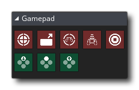

GameMaker Studio 2 dispose d'un certain nombre d'actions dédiées qui peuvent être utilisées pour détecter les contrôles analogiques et numériques à partir de plusieurs pads de jeu connectés. Ces actions nécessitent de spécifier une valeur d' index du gamepad, qui est un nombre (à partir de 0) représentant le gamepad sélectionné. Notez que lorsqu'une manette est branchée sur votre appareil (ou qu'elle est retirée), un événement système asynchrone est déclenché (toutefois, pour gérer cela, vous devrez peut-être utiliser du code).
Les gamepad "slots" sont indexés à partir de 0 avec les slots 0 - 3 inclus étant uniquement pour les gamepads Xinput, à savoir: les contrôleurs Xbox360 et compatibles. Cependant, vous pouvez également vérifier les slots 4 - ii inclus pour les gamepads DirectInput, ce qui signifie que vous pouvez détecter de nombreux autres modèles de contrôleurs lorsqu'ils sont connectés via ces slots.
Les actions de gamepad disponibles sont toutes listées ci-dessous:


Compatibilité
La liste suivante montre la compatibilité actuelle entre les plates-formes (notez que cela va changer avec les futures mises à jour):
- Windows est entièrement pris en charge avec un maximum de 11 périphériques connectés autorisés à la fois. Notez que sous Windows, les 4 premiers emplacements de la manette (0-3) sont gérés à l'aide de la DLL XInput, ce qui signifie que seuls les contrôleurs XBox peuvent être compatibles à 100% et que pour les autres types de contrôleurs 11).
- Mac OS est pris en charge avec un maximum de 4 périphériques connectés autorisés à la fois, et ces périphériques ne peuvent être que du type Playstation 3 ou Xbox 360. Veuillez noter que l'option " Build for Mac AppStore " dans Mac Options de jeu doit être DÉSACTIVÉ pour que le support de pad fonctionne.
- Ubuntu prend également en charge l'entrée GamePad, mais vous devrez peut-être installer des bibliothèques supplémentaires à partir du référentiel Ubuntu. Vous pouvez le faire facilement en ouvrant un terminal de ligne de commande et en tapant ce qui suit:
sudo apt-get install jstest-gtk
sudo apt-get install joystick.Cela va installer le support de l'interface graphique pour le joystick ainsi que le joystick lui-même.
- Les jeux HTML5 prennent en charge les manettes de jeu sur la plupart des principaux navigateurs, à l'exception de Safari.
- La prise en charge de la manette de jeu s'étend également à iOS avec l'armoire iCade. L'axe de gauche est mappé au contrôleur de manche (bien que l'entrée soit numérique, pas analogique), les quatre boutons «visage» correspondent aux boutons du devant de l'armoire et les quatre boutons aux épaules correspondent à ceux situés à l'arrière de l'armoire.
- Android exportation Android prend en charge les contrôleurs NYKO et les contrôleurs Bluetooth génériques (y compris l'OUYA), mais uniquement lorsqu'ils sont activés, ce qui signifie que vous devrez cocher l'option iCade / Bluetooth dans la section Général des Options de jeu Android. Ils requièrent le niveau 12 de l'API pour qu'ils fonctionnent pleinement et il convient de noter que GameMaker Studio 2 enregistrera comme étant connectés tous les appareils Bluetooth auxquels votre appareil est associé, qu'il soit ou non connecté. Par conséquent, ceci doit être pris en compte lors de l'attribution et de la vérification de "slots".
- Sur PS4, si vous voulez utiliser le pavé tactile, vous devez utiliser les fonctions pour le device_mouse_* boutons (il n'y a pas d'actions DnD™ pour cela).